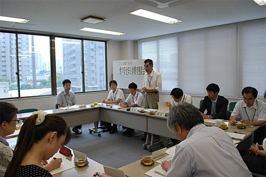

|
|
埼玉県食品安全局と埼玉県消費者団体連絡会など消費者団体の今年度第1回「食の安全・安心消費者懇談会」が7月9日（水）午後2時から埼玉県生協連会議室でおこなわれました。当日は、埼玉県食品安全局より手嶋局長はじめ食品安全課、畜産安全課、農産物安全課より8名、消費者団体6団体8名が出席し、食品の賞味期限・消費期限、県内産農産物の残留農薬検査状況を中心に懇談しました。  冒頭、手嶋食品安全局長は「社会には食の安全・安心の話題があふれています。県民にとっても関心事ですが、県からの情報提供はなかなか報道されません。正しい食の情報をどのように提供していくか課題です。今日のテーマは重要なのでご意見をいただきたい」と挨拶されました。消費者側からは埼玉消団連岩岡宏保事務局長が「食の問題は必要な量があること、衛生管理の問題、表示の問題、放射性物質・偽装・食品テロなどの問題の4つの側面があると思っています。賞味期限の問題は必要量の問題にあたり、消費者として率直に意見交換したい」と挨拶しました。 懇談テーマである「賞味期限について」、「埼玉県独の残留農薬検査について」それぞれ食品安全課担当官より説明され、懇談しました。 1．賞味期限について 食品安全課山内 隆主査より現状についてお話しいただきました。山内主査は、「賞味期限は、食品ロスをなくすことを考えて始まりましたが、賞味期限・消費期限の二つは混同されてしまっている現状があります。賞味期限の意味合いや、どのように期限が決められているのかなど理解されていない面があり、また保存方法についての意識は低い状況があります。食品ロスを巡っては、日本の米生産量に匹敵する800万トンが廃棄されている状況で、賞味期限への理解をすすめ減らしていきたいと思っています」と話しました。 2．埼玉県独の残留農薬検査について 食品安全課の渋谷正一主査より、埼玉県の残留農薬検査の現状についてお話しいただきました。渋谷主査は、「埼玉県は野菜の一大生産地です。新鮮で安全な農作物を食べていただけるように、県内産野菜の残留農薬スクリーニング検査を始めました。公的な基準では、残留農薬検査の検体は1Kg必要とされますが、検体を確保することは難しく、そこで県独自に検体量を100gとし、検査をしやすくしました。これにより検体を増やし、基準値を超える残留農薬が確認できた時には、早い対応をとることができるようになります。県内には284ヶ所の農産物直売所があり、364億円の売り上げがあります。当面は農産物直売所の野菜を中心に検査を実施していきます。4月から始めて、これまで4件の基準を超える使用禁止農薬の検出事例がありましたが、周辺調査をおこない対応しました」と話されました。 県の取り組みを報告いただき意見交換をおこないました。賞味期限について、期限が過ぎた食品の廃棄の可能性が高い世代への周知について、出前講座の実施のほか、食のリスクを身につけてもらうよう教育現場への情報伝達に努められていること、たべものを無駄にしない社会に向けて九都県市で取り組んだ「たべきりげんまんプロジェクト」など、賞味期限・消費期限について理解をすすめることが大切との認識が県より示されました。 また、県独自の残留農薬検査で4件の禁止農薬が検出されたことについては、検出された量は微量で害を及ぼすものではありませんでしたが、今回の事例をきっかけに、生産者も農薬の飛散について検討がおこなわれ、この取り組みを継続し改善をすすめることが大切と述べられました。 |